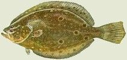

Background
Summer flounder or fluke (Paralichthys dentatus) live in estuarine and coastal waters from Nova Scotia to Southern Florida, with greatest abundance between Cape Cod, Massachusetts and Cape Hatteras, North Carolina. Most summer flounder inhabit Cape Hatteras in the summer and move offshore to depths of 120 to 600 feet of water during the fall and winter. However, some summer flounder winter over in the Hatteras waters. Flounder are more common the deep channels of the Pamlico Sound.
Like other flounders, this species is a bottom-dwelling predator, relying on its flattened shape and ability to change color and pattern on the upper (eyed) side of its body. A predator with quick movements and sharp teeth, the flounder is able to capture the small fishes, squid, sea worms, shrimp and other crustaceans that comprise the bulk of its diet. Summer flounder can live to 20 years of age with females living longer and growing larger than males (up to 95 cm TL (3ft)).
Life Cycle
Summer flounder spawn during their offshore migration, from late summer to midwinter.
Larvae and post-larvae drift and migrate inshore, aided by prevailing water currents, and enter the Sound from October through May.
Larval flounder have body symmetry and eyes on both sides of their heads.
Upon reaching the estuaries, larval flounder undergo a metamorphosis to the post-larval stage. During metamorphosis, the right eye of the larval flounder gradually migrates to the left side of the head–the feature distinguishing summer flounder from winter flounder, whose eyes are on the right side–and the body takes on the flattened appearance that it retains as an adult fish.
Once the metamorphosis is complete, the post-larval flounder assumes the adults’ bottom-dwelling lifestyle.
Juvenile summer flounder often live among eelgrass beds in the Pamlico Sound.
|
|